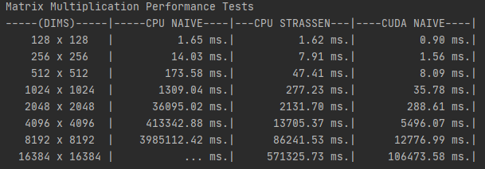
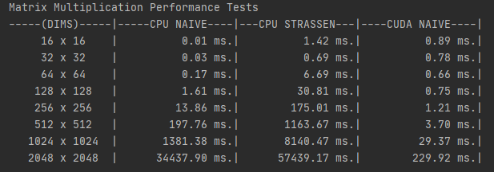
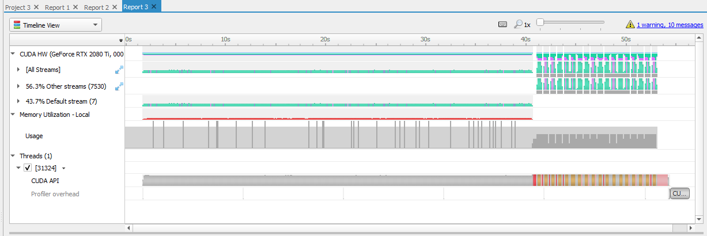
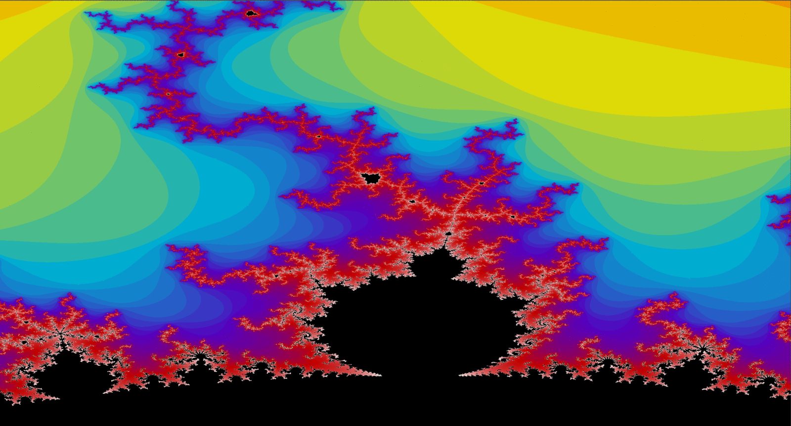

×
Repo Link: https://github.com/rottenroddan/Propulsion
Image of Mandelbrot above the main disk with period 8. Image was generated
via the Mandelbrot class with 1500 iterations per pixel value.
Propulsion, was a Numerical/CUDA project I started before my final semester in the fall
of 2020. The project (being a self-project) has gone through many technical changes as more
research has been done on paticular subjects. Firstly, I'd like to mention this project is not
meant to rival libraries like cuBLAS or Boost. It is simply created to apply my understanding,
analyze and research more about the numerical operations that have a huge impact in todays algorithms
like Machine Learning/Artificial Intelligence.
In the start, I was mostly focused on creating CUDA Kernels to solve simple matrix operations
like addition/subtraction/schurs product. As I got the hang of using CUDA from samples provided online,
I started looking more at the numerical operations that would benefit Machine Learning the most. From this
point on, I started creating a Matrix class with various methods to support numerical operations. This
class also uses smart pointers to handle memory. You can see more on my Github about all the various methods.

Image of original dot product tests with paged memory for all methods.
Above are the results of a controlled dot product test on various
sized square matrices. You can see right away that the Naive CPU method is very slow for large matrices.
I actually skipped the 16384x16384 test for CPU NAIVE as it would of took ~10 hours to complete.
Importantly, note while Strassen Multiplication was beat in all cases against CUDA, it has better
time complexity than CUDA as it requires less multiplications than the naive method. You can
see that in theory, this method is much faster. However, the results are skewed as the Strassen Method only uses
7 threads at any given time. While CUDA is 1024 light-weight threads... Even the testing data is suited well
for Strassen multiplication, as they're all square matrices of 2^N size, which allows for no time spent padding
the matrix to an even number or rows/cols.
As of 3/17/2021, I have successfully updated the Matrix class to handle paged memory allocations and
pinned memory allocations using unique_ptr to handle the lifetime of the Matrix itself. Originally after
refactoring my code, it seemed that CUDA pinned memory wasn't disadvantageous as I thought, until methods
like Strassen Multiplication were tested upon. Since I was using to cudaMallocHost to allocate an array, which
is notoriously slow if called frequently, this created the below results:

Image of dot product tests with pinned memory for all methods.
Above, you can see the difference that pinned memory had on the Strassen
dot product. The naive CPU method is much faster even though it has worse time complexity. This is due to
cudaMallocHost being called many times since this method relies on Matrix Constructors to allocate more memory.
This prompted me with another design change, which is to incorporate pinned memory and paged memory in this class.
The Matrix class would inherently be pinned memory, unless specified as paged via a parameter in the constructor.
Results with Paged for CPU and Pinned for CUDA below:
I have future plans to return to Matrix Dot Product to further optimize the CUDA kernels as the naive
kernel does not take full advantage of the my GPU as other sources suggest.
This class is currently mostly work in progress. Uses packed template arguments to allow
the user to build an any size dimension tensor. The tensor class contains a container which holds unique pointers to
Matrices. Since the operations I'm dealing with, I found it beneficial to just reuse the Matrix class rather than
creating a new array of values.
Firstly, I was able to utilize CUDA's streams to create async copies and kernel launches. Along with less overhead,
Tensor::cudaAdd was able to achieve a 3x performance gain on my original implementations. Below you can see the Nsight data.
For the first ~40s, 6 additions are done on two Tensors of size (5.76GB). This naive method doesn't use streams, and therefore
a lot of time is wasted on non-sync memory transfers. From 41s on, streams is enabled for 6 Additions of the same 5.76GB
of data. This method is clearly faster as the 6 additions finish in 13s vs ~40s. You can see more on my Github on how I implemented this!


The above image starts from 125 itterations -> 250 -> 500 -> 1,000 -> 1,500 -> 2,000 -> 5,000 -> 10,000 ->
20,000.
Propulsion also has another class "Mandelbrot", which is a simple class
that uses the Matrix class I designed to help implement a visualization of the Mandelbrot set on windows.h
API. This part of the project was more of showing off the various optimizations I could perform
on the Mandelbrot Set using CPU driven SIMD instructions(AVX2 in my case).
Above, you can see the Mandelbrot change from smeared shades of colors to more fine in detail. Due to
total calculations per pixel in the Mandelset is increased, thus getting a more accurate depiction of the
fractal. This part of the project was just a for fun topic I always wanted to learn how to implement. Below are
the performances for various methods of calculating.
The above tests were generated on a zoomed part on the main bulb. Results vary greatly depending on the position of
of the Mandelbrot set, as some groups of pixels are finished in less clock cycles than others. Ran on a i9-9900k and Nvidia 2080ti.
Mandelbrot could get a ridiculous speed increase if I chose to use OpenGL to render the image on screen,
as currently it is being calculated on CUDA, then copied back to host, which then uses Windows to draw the image
on the screen.